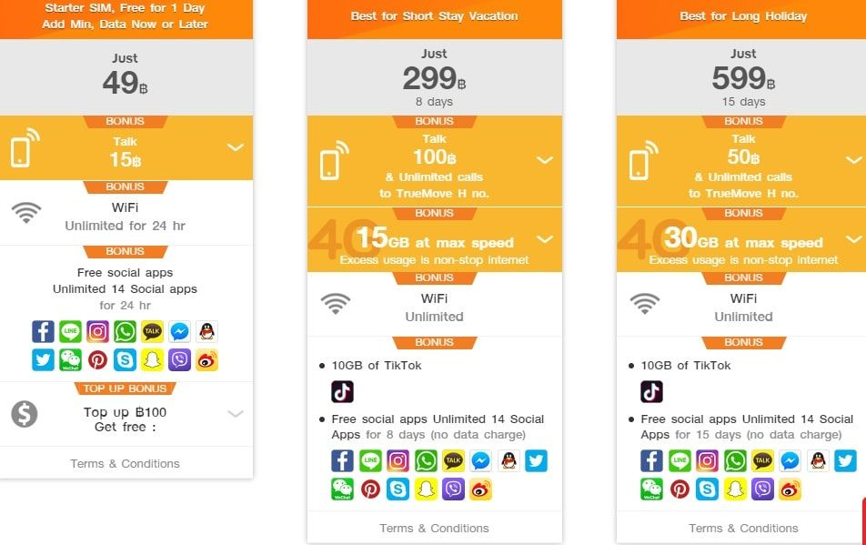
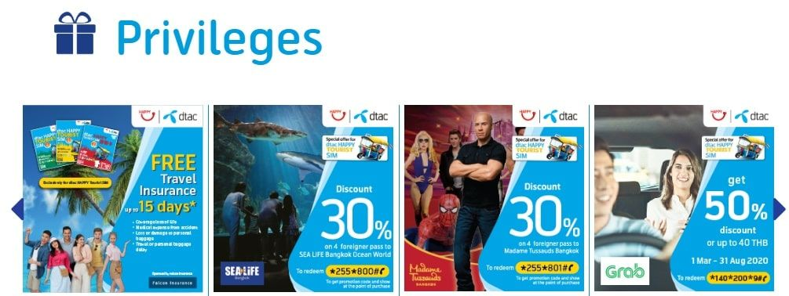
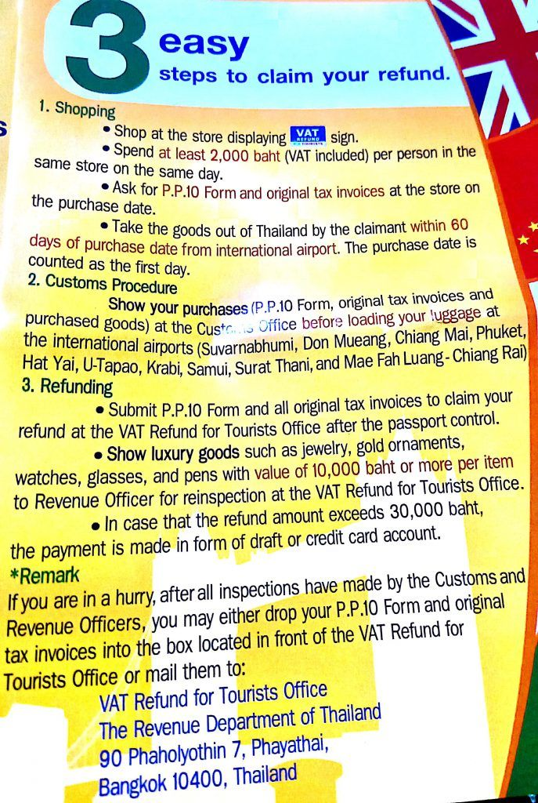
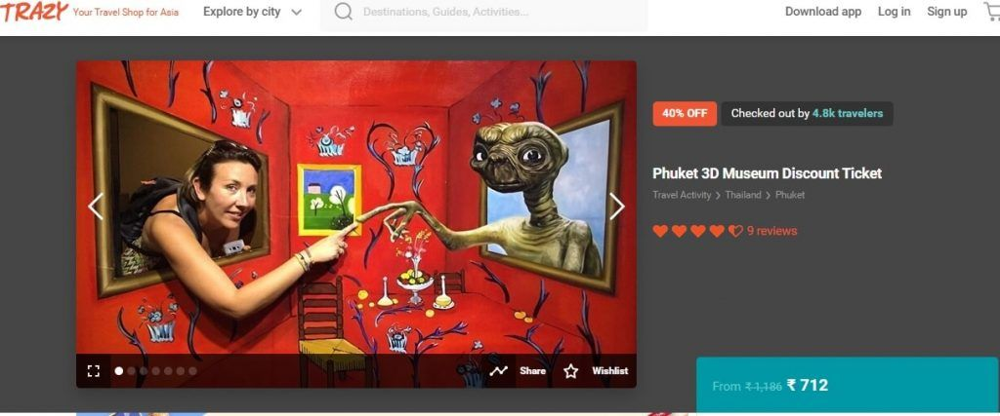
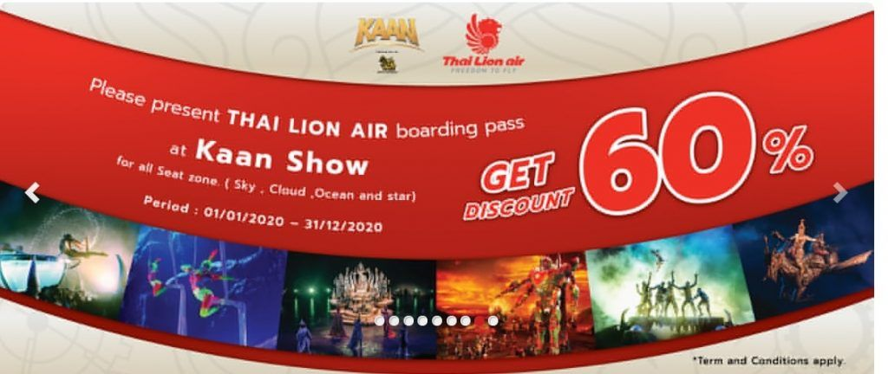
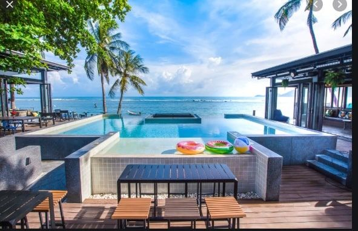

Written after our trip, in June 2020. Prices, visa rules and opening times may have changed since, so please check before you book.
Thailand is one of the most popular foreign destinations for most Indian and global tourists. I am sure everyone wishes to travel to Thailand atleast once. And when you do travel to Thailand, you realize that there is so much to see and do that you are running short of money. This article details 18 simple ways to save money on Thailand trip so that you can fully enjoy the trip.
Also note the tips given on few ways. These are based out of personal experience and will definitely help you :)
Table of Contents
- 1. Visa
- 2. Photograph
- 3. SIM Card
- 4. VAT Refund
- 5. Grab Car App
- 6. Advance booking of activities / experiences
- 7. Cab booking for transfer to different cities
- 8. Using offers run by airlines and their partners
- 9. Forex Cards and Cash Withdrawls from ATM
- 10. Avoid Booking.com website for hotel bookings
- 11. Online currency exchange
- 12. Hostels
- 13. Home stay
- 14. Tuk Tuk
- 15. Water Bottle
- 16. Street Food
- 17. Bike rental
- 18. Bargain
1. Visa
Indian passport holders can get Thailand tourist Visa either before travel or on arrival.
If you want visa before travel, you will have to apply online and pay the fees (INR 1500/-). Based on my search, the easiest way is to submit the documents on Makemytrip portal. They will charge a little extra (as convenience fees) and issue the visa within 3 -5 days.
Visa on Arrival (VOA) was supposed to be free until Dec 2020. However, due to Covid situation, VOA is temporarily stopped. Also, remember that VOA will consume between 1 - 2 hours of your time at the airport. So depending on your preference, decide how you want to get the Visa.
2. Photograph
For Thailand Visa, you need to paste your latest photograph in the visa application form. And the photograph should meet below-mentioned specifications
Photo requirement - For Thailand visa, the photo should be 4 cm (width)*6 cm (height) in size, with white background, matt finish and without border. The person should not be wearing glasses/spectacles or any accessory (like a headband, bandana, scarf, cap, earphone etc except if it is for religious purpose). His/Her face, shoulder and ears should be visible. Face should be natural without smile and the photo should not be more than 6 months old.
Problem is that your visa might be rejected if your photograph does not match the requirement. In that case, you will be forced to click photograph at Thailand airport by paying 500 THB per person.
A cheaper alternative is to get the photo clicked in India before you go. While only 1 copy is needed on the visa form, keep one or two extra just in case you need it anytime.
3. SIM Card
Thailand has three major telecom companies => DTAC, AIS and Truemove. All offer plans of similar price and benefits. For tourists, plans are normally based on number of days validity. So you have 4 days, 8 days, 15 days plan etc where you will get unlimited internet access to a few basic apps like Whatsapp, Twitter, Insta, FB etc along with some talk time. But internet usage on surfing/using other apps will be calculated and you will get reduced speed on reaching the threshold limit.

One good thing is that you will also become eligible for few discounts during your stay. So my suggestion will be that you compare all three providers and decide whose SIM you want to purchase before you travel.

To save money, I will recommend two options:
- Choose a basic plan which is valid for the number of days of your stay but does not have enough talk time. And top it up once you are in the city whenever you require it. Top-up can easily be done at any 7-11 / Family Mart or major stores
- Purchase the SIM card in India itself from airport duty free shopping area (after clearing all your security and immigration checks). Though you might have to pay a little extra, the benefit is that you will be paying in INR ( and via credit card :). This will help save your THB which will come handy in Thailand and also earn you some points on your credit card (without any currency conversion charges)
You might be interested in => Best Travel Credit Cards in India
Tip => Prefer buying Thailand specific SIM instead of International Roaming on your phone or SIM offered by companies like Matrix etc. Also, clearly understand whether there are roaming charges if going to other cities within Thailand or not.
Tip 2 => If you are visiting multiple countries in your visit (people normally cover Thailand - Singapore - Malaysia), buy multi country pack.
4. VAT Refund
If you are on shopping spree in Thailand, then better take advantage of the VAT refund policy. You are eligible for VAT refund on purchases above 2000 THB per person per store per day. Simply follow the process mentioned in below image to get the refund

5. Grab Car App
Just as we use OLA and Uber in India, Thailand uses Grab. It is cheap, reliable and easily available in Bangkok and other big cities like Pattaya and Phuket. Depending on your family size, you may choose the vehicle type (they even have bike riders for solo travelers). The best feature is that you can chat with the driver and the app automatically converts it to the local language. And obviously it will help you save lots of money than booking a taxi at the airport.
Tip 1 => While Grab is good, my suggestion will be to prefer Skytrain facility in Bangkok. It is quicker and cheaper. You should buy a pass (known as Rabbit pass) and then enjoy travelling in Bangkok without worrying about high cab fares.
6. Advance booking of activities / experiences
In India, we pay higher fees when booking tickets online as service charges and convenience fees are usually added. However, in Thailand, it is a great idea to book tickets online as you get a huge discount on pre-booked tickets. You can save up to 60% when tickets are booked online instead of at counter.
Note => Remember is that for most of the tourist attractions, online booking has to be done 1 day in advance to get discount. So advance planning is necessary on where you want to go the next day.
Tip 1 => Instead of booking directly on the vendor website, compare prices of activities on websites like Klook, Make My Trip and Trazy. You will get discounted prices here and will be able to save a good amount. An added advantage is that you will have to pay in INR instead of THB. For example, Trick eye 3d museum ticket for an adult costs 450 THB (approx 1187 INR). Same ticket can be purchased at INR 855 on Klook and INR 712 at Trazy

Tip 2 => In Thailand, you will not receive OTPs on mobile for any online transactions you want to do via Indian credit/debit cards. Hence, your payment will not complete. This was the biggest problem we faced during our stay. The best solution is to use credit card in which you can enter either OTP or password (like in HDFC) or where the OTP comes on both phone and email (like Amex)
7. Cab booking for transfer to different cities
Just like advance booking of activities/experiences, there are advance booking options available on Grab, Make My Trip, Klook etc via which you can book cabs for city transfer. The prices are usually on par / lesser than what you may find at last minute / local inquiry. And you will have the convenience of not waiting for the cab on your arrival. It will already be waiting for you :)
For example, a 4 seater car between Bangkok and Pattaya costs between 1200 - 1500 THB while 8 seater van will cost 2000 - 2200 THB. You may get discounts if booking online in advance
8. Using offers run by airlines and their partners
Most of the local airlines (like Thai Lion, Air Asia, Nok Air, Thai air etc) have tie-ups with various merchants and offer good discount to their passengers on purchase at those merchant outlets. So remember to keep your boarding pass safely and check the airline website for partner offers.

9. Forex Cards and Cash Withdrawls from ATM
In Thailand, cash is the king. Unless you are in high-end places or the total bill is of high amount, you will have to pay cash everywhere. They either don’t accept cards or add extra fees to them (between 2 - 5%). So most probably, your Forex card will not be of much use. The worse thing is that Cash Withdrawl from ATM is also charged. You will have to pay up to 200 THB on ATM cash withdrawal.
The best option is to carry ample amount of INR / USD / Euro. They can easily be converted at most of the places (and at similar rate to what you will get in India)
Tip 1 => Carry 50 or 100 USD denomination. These are easier to exchange and you will get very good exchange rate
Tip 2 => Do not exchange at airport or banks. You will always get better price in city.
10. Avoid Booking.com website for hotel bookings
Ensure that you do not book Thailand hotels via Booking.com. This is because Booking.com never pays the hotel upfront. It just keeps your credit card details to ensure they charge you in case of no-show/last-minute cancellations. However, if you do show up, you will have to pay at the hotel reception.
Now the problem with this is that hotels demand cash payment. They either won't accept card payment or will ask for extra fees on them. This depletes your cash reserves rapidly forcing you to either lose money by withdrawing cash or paying via card (as mentioned in point #9). A better alternative is to book via any other site except Booking.com. We observed that for bookings done via Agoda and Make my trip, payments were already made and hence we did not have to pay anything (except the refundable security deposit).
11. Online currency exchange
Before your departure, you will have to convert some INR into THB. Try checking the prices on FXKart or BookMyForex. They give very good rates and exchange the currency within half a day in major cities (they even have doorstep delivery in specific areas of the city). It is certainly better than getting the currency from banks at a higher rate
12. Hostels
Since Thailand has lots of western tourists, they have Hostel culture. You will find lots of hostels in major cities. And make no mistake. These are equivalent to or better than a standard 3-star hotel in India. There is a lot of emphasis on cleanliness and hygiene. So what you get is good place to sleep at a cheap rate. Additional benefit is that many of them will also have a swimming pool and indoor games, all-day parties and fun happening on the campus. They conduct group parties and group outings (like pub crawl, food outing etc). So if you are going to Thailand to drink and enjoy night life, experience local food or like mingling with people, you should consider staying in hostels and saving money.

13. Home stay
While most of us love the convenience of hotel stay and the buffet breakfast spread, the picture is not so rosy for vegetarians traveling to Thailand. In a four-star or five-star hotel, you might get few vegetarian items in the buffet. But in two or three-star hotels, you will have to rely on bread and fruits for survival. A better alternative is to book homestay via Airbnb or Makemytrip. Though you will have to cook yourself (most of us hate that on holiday), you will be assured of what you are eating. And since you can cook at home as per your wish, you will also save on expensive lunch/dinner costs in restaurants. This will also help you save on laundry expenses.
14. Tuk Tuk
Tuk Tuk are nothing but 7 seater autos we find in India. Just fancier and colorful. And if you know your way around, they are a lot cheaper as they ply on fixed routes and charge a fixed amount. In Thailand, there are plenty of one-ways. And Tuk Tuks normally have a fixed route where they keep circling. So just hop onto one and ring the bell when you want to get down. Simply pay a fixed amount and move on. In our case, we used it extensively in Pattaya where cost was 10 THB per person
Link to read my article on Pattaya => What to do during your first time to Pattaya
15. Water Bottle
One of the biggest problems in Thailand is the lack of free drinking water. You will not get free drinking water anywhere. Your hotel will not give you more than 2 bottles a day and all the restaurants charge for drinking water (between 20 - 25 THB per lt) . A cheaper alternative is to buy 5 lt cans from 7-11 / family mart and store them in your hotel. You get them pretty cheap (at around 50 THB). Transfer water into smaller bottles whenever you are going out
16. Street Food
Dining in restaurants is a costly affair in Thailand. While you cannot avoid it, do try the street food at times to help you save money.
Thailand offers loads of options for non veg lovers. You will easily get roadside stalls selling variety of things.
For vegetarians, options are less. But you will find lots of fruit sellers, smoothie sellers, pancake sellers and coconut water sellers. Eating these can easily fill your tummy atleast for one meal. And trust me. Their coconuts are huge and you will feel very full after drinking them :)
17. Bike rental
Just like Goa, Thailand is best explored on rental bikes/cars. This is especially true for beach cities like Phuket, Krabi, Koh Samui etc. Charges depend on the type of bike/car being rented and you have to fill bear petrol expenses. However, you will have the convenience of exploring the town at your own pace. Just ensure that you have International Driving license
Tip 1 => While some rental agencies will accept Indian Driving License (which has details in English), it is always better to get an International Driving License. This way, you will have peace of mind even if any policeman stops you.
Tip 2 => Do not go for bike rental in Bangkok as you can easily find public transport - buses, sky train, tuktuk, cabs etc. Plus the police checks are strict in Bangkok
Tip 3 => When you are renting the bike/car, remember to take video of the bike/car with special emphasis on existing dents/scratches. This way, you will have proof and wont run into trouble while returning the bike/car.
18. Bargain
You can bargain on most of the things in Thailand. Just remember to do it politely and with a smile. If not, they will ask you to leave.
The best example of this is when we had to travel from Phuket to Koh Samui. We enquired with at least 10 travel agents and each gave a different price. Their starting price was between 600 - 800 THB per person and after a few rounds of polite bargaining, came up to 400 THB.
I hope the above 18 simple ways to save money on Thailand trip will help you enjoy your vacation without worrying about expenses.
Do you have another great tip to save money in Thailand? Leave a comment below!